Brunchao primeiro domingo
Mesa farta de sabores de cá e de longe, com cocktail de boas-vindas, no primeiro domingo de cada mês.
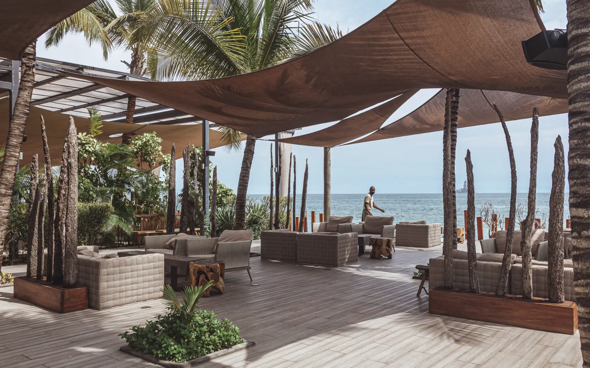
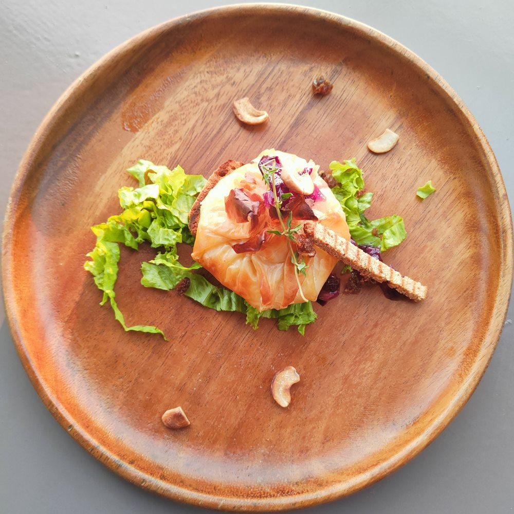
Café del Mar · Ilha de Luanda
Mesa farta de sabores de cá e de longe, com cocktail de boas-vindas, no primeiro domingo de cada mês.
Peixe da costa, marisco e saladas frescas, à sombra dos toldos e com o mar mesmo ao lado.
Quando o sol mergulha no Atlântico, o bar acorda: Mwana Pwo, Ombaka e Lovoka Passion.
Casamentos, aniversários e encontros de empresa, com espaço para mais de 250 convidados.
O nosso beach club boho chic: espreguiçadeiras, melodic house e o mar a dois passos.
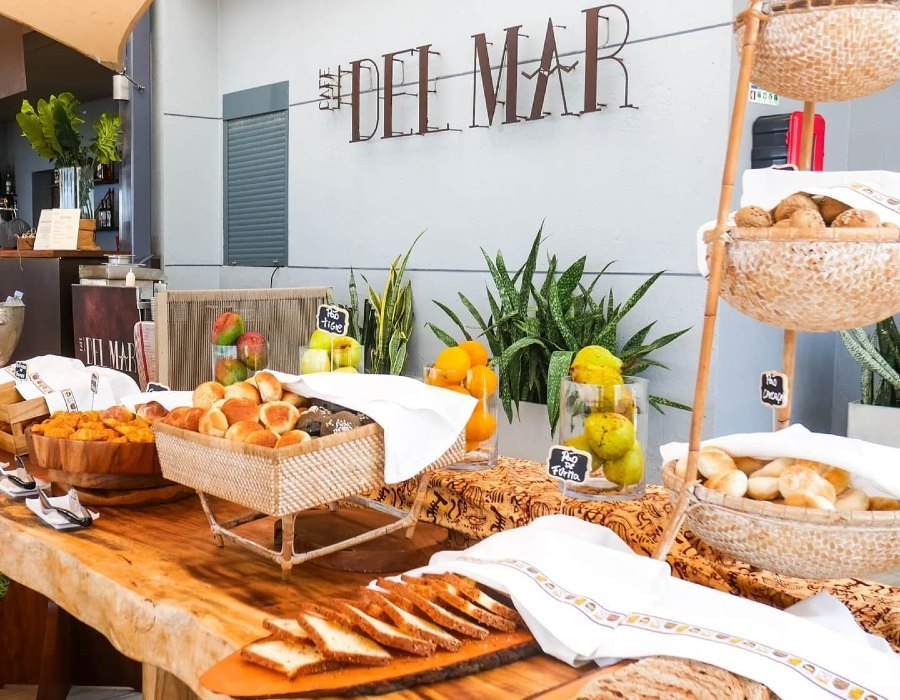

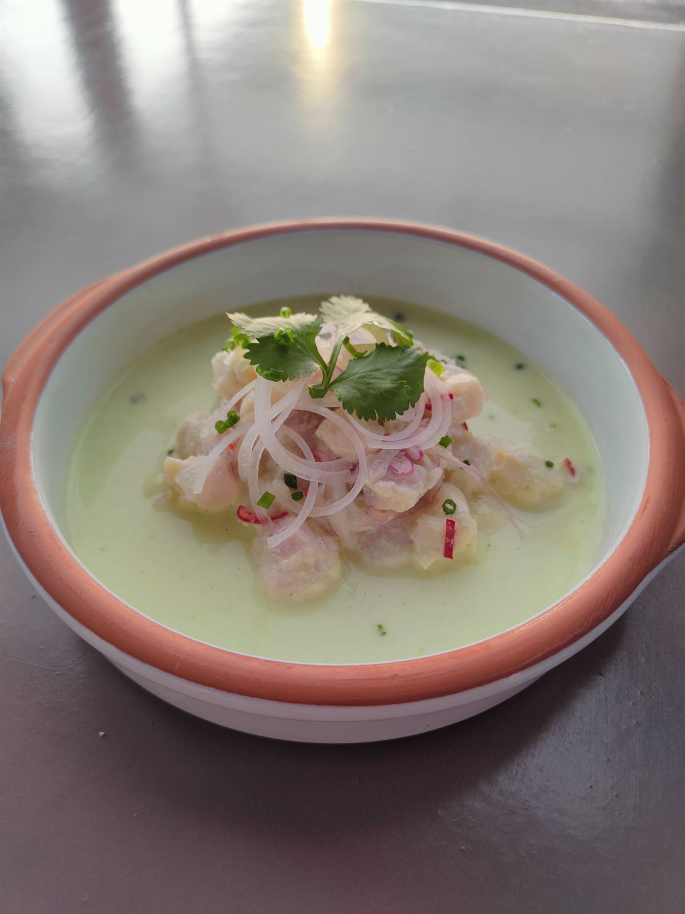
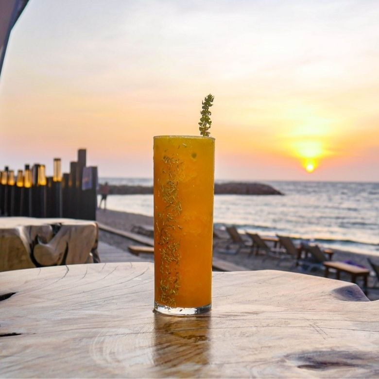


Desde 1998, mesas postas a poucos passos da água: almoços que se prolongam, cocktails ao cair do sol e noites com a brisa do Atlântico.

Maneiras de passar o dia
Comece na praia, encontre os amigos ao almoço ou chegue quando a luz fica dourada. Aqui o dia não tem horário marcado.
Manhãs de sol, almoços partilhados, cocktails ao entardecer e celebrações à sua medida.
Pequeno-almoço com vista, café quente e o mar ainda calmo. Aos fins-de-semana abrimos às 9h.
Pratos para partilhar, bebidas frescas e uma esplanada que convida a ficar mais um pouco.
Quando a luz aquece, os cocktails chegam à mesa e o Atlântico muda de cor.
Aniversários, jantares privados e celebrações, com espaço para mais de 250 convidados.
Quando a tarde abranda

Fruta tropical, rum, maracujá e creme de múcua. Cocktails de autor criados na Ilha, para beber devagar enquanto o sol se põe.
Da cozinha para a esplanada

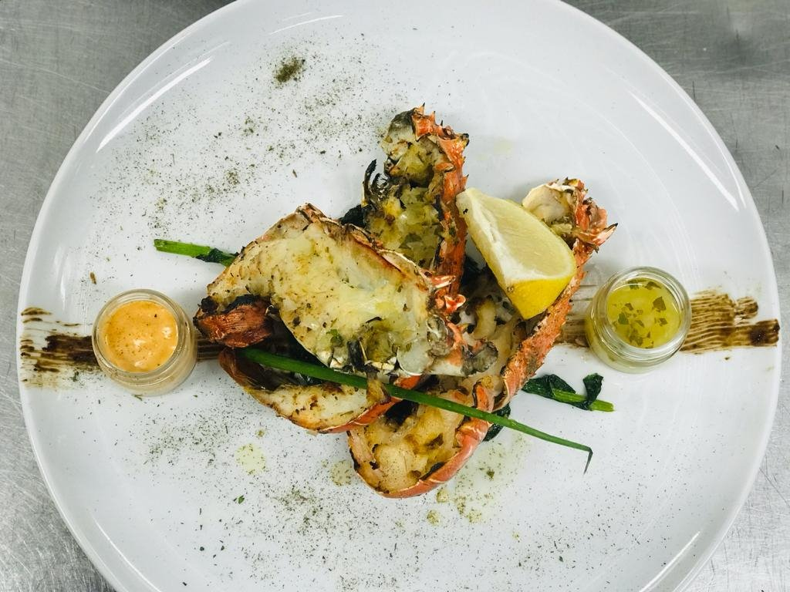
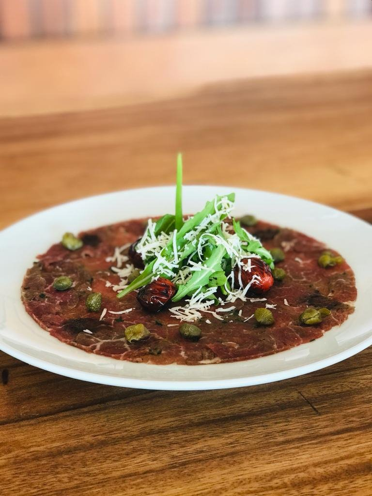
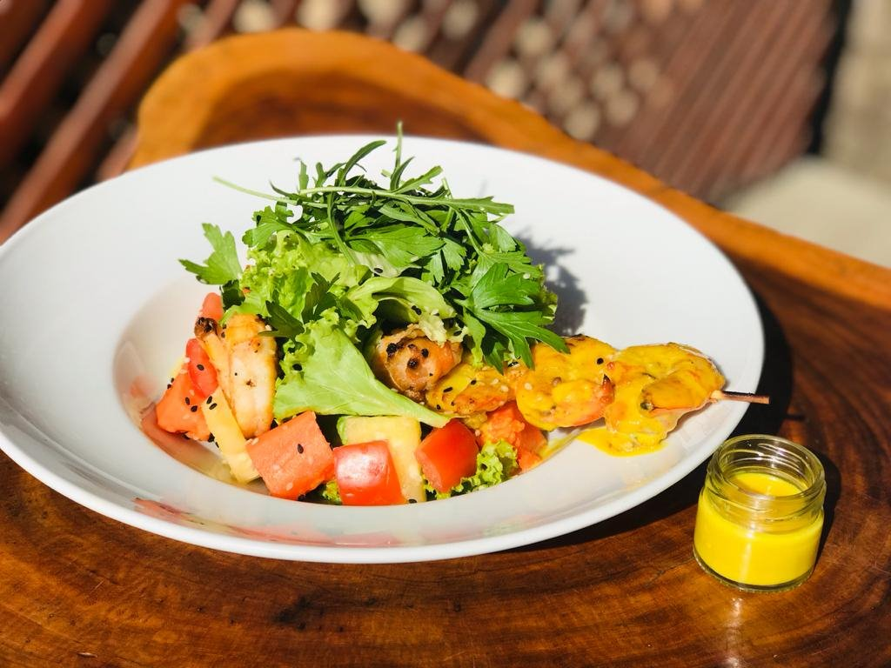
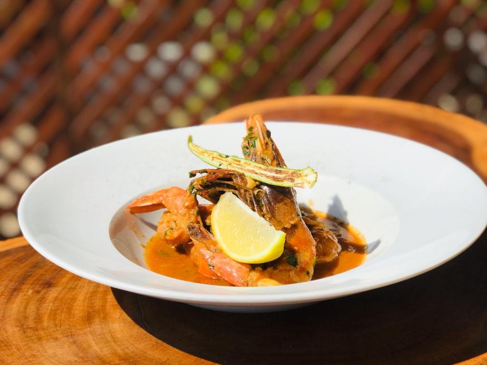
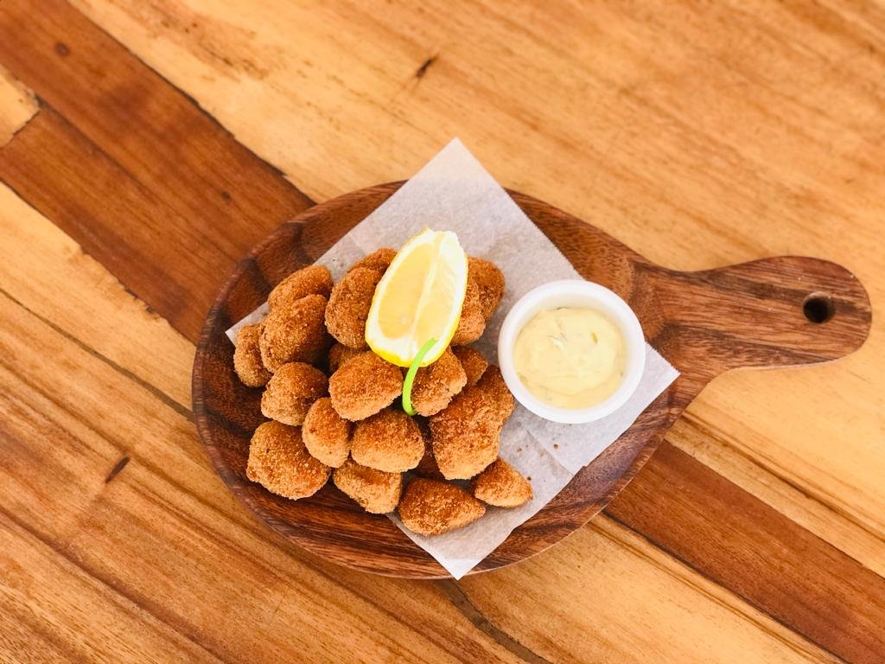
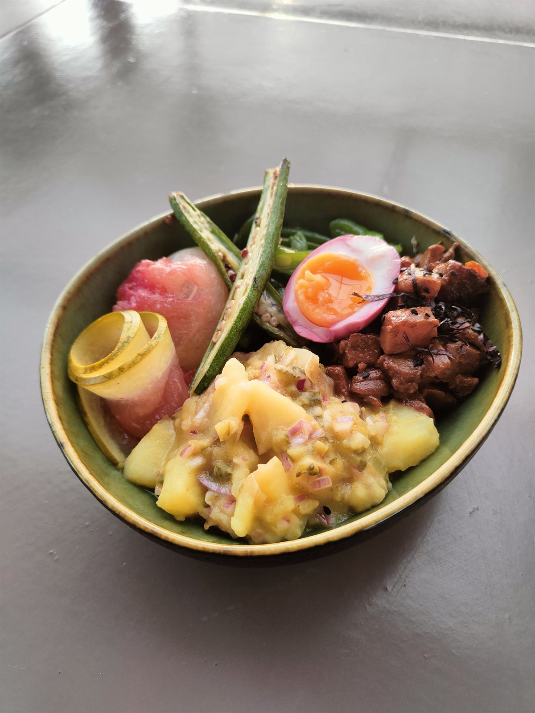
Agenda da casa
Do brunch mensal às celebrações privadas: escolha o momento e nós tratamos do cenário, do menu e de cada detalhe.
Brunch no primeiro domingo de cada mês. Eventos privados por marcação, com proposta em até 24 horas.

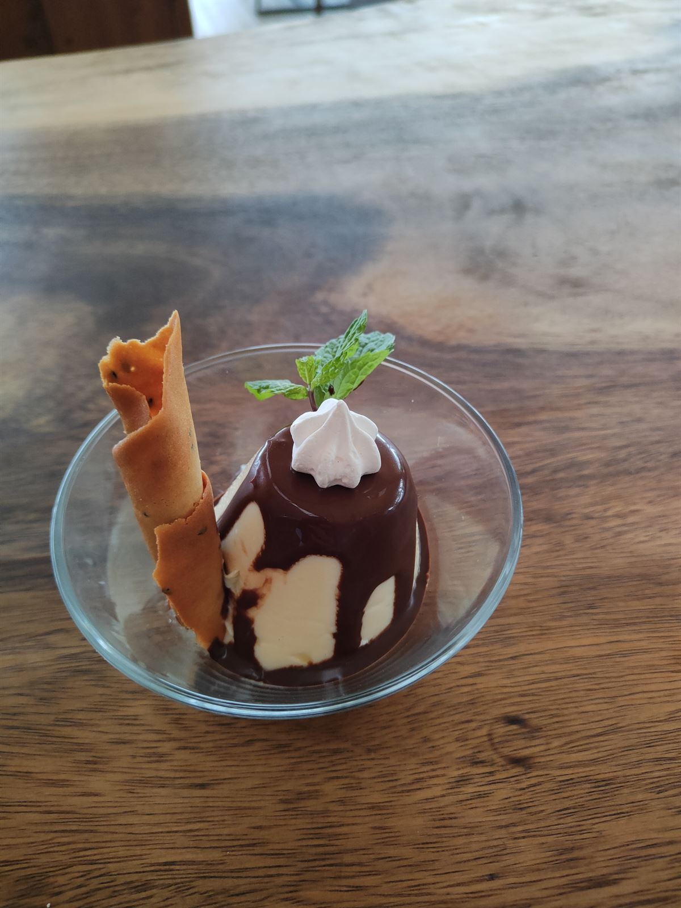